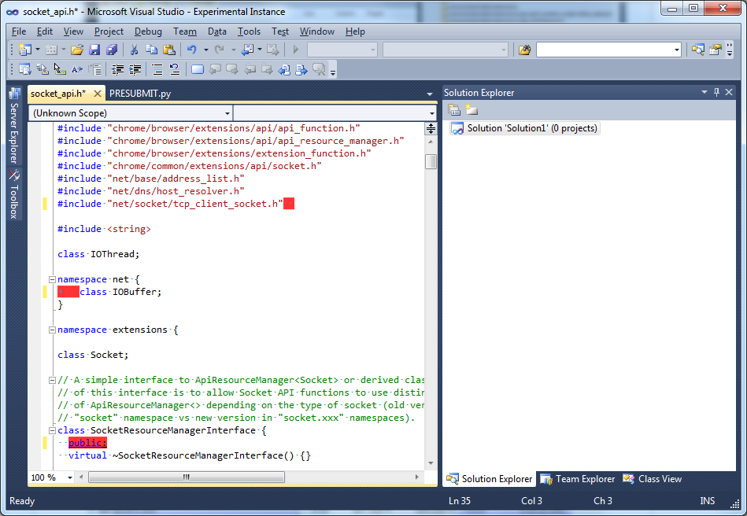

Chromium Coding Style checker
When a source file belonging to a Chromium enlistement is opened in the Visual studio editor, a few custom "classifiers" (or "colorizers") kick off and inspect the code for Coding Style violations. Each violation is indicated with a red background highlighing of the text violating a rule.
Note: There is no requirement to have a Chromium solution open, as the discovery is based on the content of the file system, not on the list of projects/solutions opened in Visual Studio.
The set of rules currently supported is minimal but is helpful for a developer new to the Chromium Coding Style rules.
Example
The image below shows a source file violating a few rules: extra spaces
at the end of a line, usage of the TAB character, incorrect indendation
of the "public:" accessor keyword.

List of supported style violations
- Lines longer than 80 columns
- Trailing spaces
- TAB instead of space characters
- Invalid use of "else if" on new line
- Invalid indentation of "public:", etc. modifiers
- Space after "for" keyword
- Usage of CRLF instead of LF as end of line characters